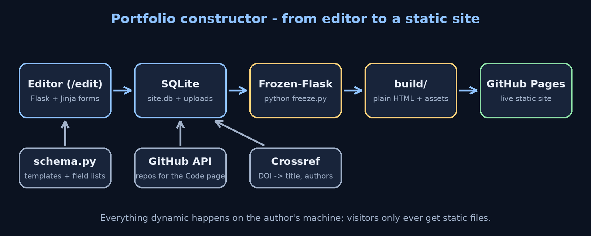

Portfolio Constructor: an editor that publishes a static research portfolio
Designer & developer (solo) · 2025 - 2026
Problem & Motivation
A research portfolio keeps changing: new papers, projects, certificates, conferences, code. Hand-editing HTML for every change is slow and error-prone, while hosted site builders are rigid and cost money. I wanted to add an entry by filling in a form and have a fast, free, static site come out at the end.
Technical Challenge
Keep the editing experience dynamic while the published site stays fully static (GitHub Pages has no server). Every new kind of content also had to be addable without breaking existing data, and different kinds of work (HCI case study, systems write-up, learning-design write-up) need different page structures.
Objectives
- Edit everything from a browser form, locally.
- Publish as plain static files.
- Add fields and sections without database migrations.
- Look consistent whatever the content.
System Architecture

System Overview & Pipeline
A Flask app is the editor and a live preview. Content lives in SQLite and an uploads folder. Frozen-Flask renders every public page to plain HTML in build/, which is pushed to GitHub Pages. Visitors never touch Flask or the database.
Implementation Details
- Template schema: one
schema.pydescribes the fields of each project / publication template (HCI & AR-VR, Tech for AR-VR, Educational Technology). The add form, the edit form and the detail page are all generated from it, and extra fields are stored as JSON, so a new field needs no migration. - Publications: paste a DOI and the title, authors and year are filled in from Crossref.
- Content types: projects, publications, scholastics, skills, certifications (certificate files are viewed on the site itself), conferences, writing, indie projects, and a visual page builder for “At a Glance” pages.
- Code page: repositories are synced from the GitHub API, then hidden, pinned, renamed and categorised by hand; a tech-stack bar filters them and READMEs open in a preview on the page.
- Safe upgrades: tables are created on start and only ever gain columns, so an existing database and its uploads keep working.
Target Platforms & Devices
Key Metrics
0 servers needed to host the published site.
3 templates and one schema drive every project and publication page.
Limitations & Future Work
The editor is single-user and has no login (it is meant to run on my own computer, never to be hosted). Writing and indie-project entries cannot yet be edited in place, and the GitHub sync needs a manual run before each build.